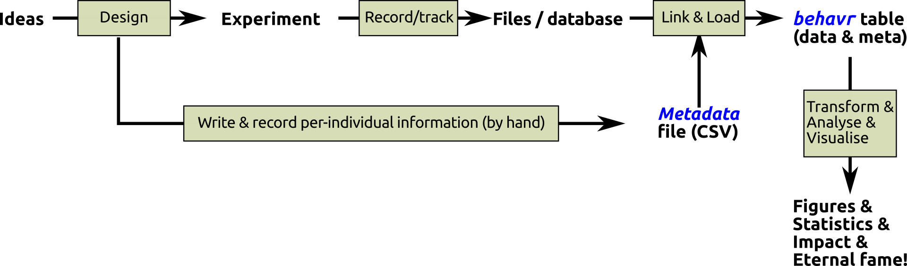

The rethomics workflow
From hypothesis to results

The rethomics workflow
In rethomics, we envisage behavioural experiments as a workflow:
- Design – you plan your experiment (I can’t really help you with that, but I trust you!).
- Record/track – you use your acquisition platfrom to record behavioural variables over time. They define the format of the results.
- Write individual information – you make a spreadsheet (CSV file) that details the experimental conditions for each individual. We call this a metadata file. It is a crucial concept in rethomics, so we will dedicate it the next section. You can often write your metadata as you plan your experiment, but sometimes, you want to enrich it with varibles that you can only record after your experiment (e.g. lifespan).
- Link and Load data – First, we enrich your metadata by “linking” it to the result. This allows you to load all the matching data into a single
behavrtable (see section onbehavrtables). - Tranform & analyse & visualise – you take advantage of
rethomicsandRanalysis and visualisation tools.